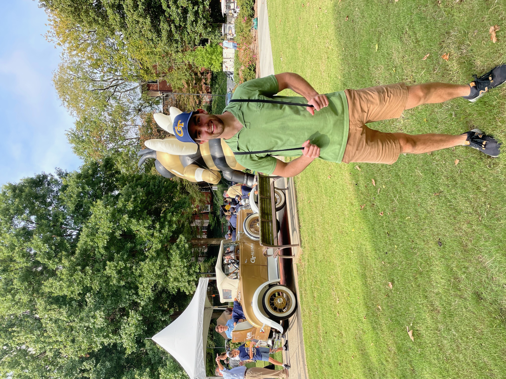

Welcome to my portfolio!

My name is Garrett Manaster, and I am a rising second year computer science student at Georgia Tech! I created this portolio to keep my coding projects, as well as my life adventures organized. While I am still exploring the computer science field, I have found myself especially interested in Machine Learnig and Virtual Reality, and hope to add some projects related to these soon. My goal for this upcoming school year is to cement a strong understanding of web application development so that I can begin using the coding skills I have learned during coursework to produce tangible applications.